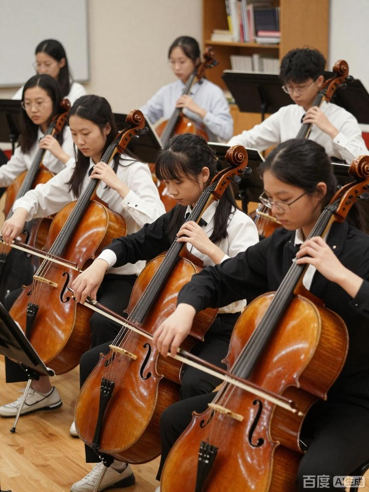

大提琴社团是校园里以大提琴演奏为核心载体的音乐兴趣团体，汇聚了所有热爱大提琴的在校师生，从零基础的入门爱好者到拥有多年演奏经验的资深学习者，都能在这里找到属于自己的音乐空间。社团成立以来，始终以“以弦为媒，以乐润心”为核心宗旨，不设过高的入门门槛，不局限单一的演奏风格，只为让每一个对大提琴音色抱有向往的人，都能触摸到这门乐器的温度，在弓弦的起落间感受音乐最纯粹的力量。
大提琴素来有着“最接近人声的乐器”的美誉，它的音色浑厚丰满、深沉内敛，既可以奏出如抒情诗般婉转的绵长旋律，也能撑起和声里厚重扎实的低音声部，像一位温儒敦厚的老友，总能把藏在心底的情绪缓缓诉说。社团日常的训练体系采用阶梯式设计，完全适配不同基础的成员：针对零基础的新成员，我们会从认识乐器构造、纠正持弓按弦姿势开始，用趣味化的节奏小游戏、简易的入门小曲目帮大家建立音感，打消“学琴很难”的顾虑；针对有一定基础的成员，我们会安排系统的基本功强化训练，从弓法控制、音准打磨到情感表达逐点突破，同时加入重奏排练，让大家在配合中理解声部平衡的意义；针对高水平的成员，社团会提供定制化的进阶指导，支持大家挑战经典大提琴独奏曲目，尝试改编流行、国风等不同风格的作品，充分释放演奏的创造力。
除了固定的每周常规排练，社团的日常活动始终保持着丰富多元的节奏。我们会定期举办小型音乐沙龙，没有严肃的舞台距离，大家围坐在一起轮流演奏，分享自己和大提琴相遇的故事，聊聊练琴时遇到的瓶颈、最近迷上的新曲目，在轻松的氛围里交换演奏心得；每学期我们都会策划至少两场专场汇报演出，从校园艺术节的舞台到社区公益展演的现场，为成员搭建不同场景的展示平台，让大家的每一点进步都能被看见；我们还会和校内外的其他音乐社团联动，和小提琴、钢琴社团合作排演室内乐作品，和合唱团、话剧社合作完成现场配乐，在跨艺术的碰撞里拓展音乐的边界。不少成员在这里从只会拉简单的练习曲，到能完整演奏《天鹅》《欢乐颂》等经典作品，更在一次次合奏中读懂了“音乐不是独奏的艺术”，学会了倾听他人、配合彼此，团队协作的意识在旋律的交汇里慢慢生根。
在多年的发展中，社团也沉淀下了属于自己的独特印记。我们建立了完善的内部管理机制，设有排练组、活动策划组、宣传组等不同分工，由成员自主参与社团运营，从排练内容安排到演出落地执行，每一个环节都能看到大家的身影；我们积累了数百首不同风格的合奏、重奏乐谱，建立了共享的乐谱库，还配备了专门的乐器存放区和练习角，方便成员课后随时前来练琴；社团的不少老成员毕业之后依然保留着和社团的联结，会返校开展分享会，把自己后来在音乐道路上的经验传递给新的学弟学妹，让这份对大提琴的热爱始终延续。
在这里，练琴从来不是一件枯燥的苦事。有人在反复打磨同一首曲子的过程中磨出了远超从前的耐心与专注力，有人在低沉温暖的琴声里消解了学业的疲惫和焦虑，有人原本性格内向，却因为一次重奏排练交到了志同道合的挚友。我们始终相信，大提琴不只是一件乐器，更是连接人的纽带，它能让一群原本互不相识的人，因为同样的热爱走到一起，在弓弦起落间传递情绪，在旋律交汇里彼此陪伴。如果你也喜欢大提琴温暖厚重的音色，如果你也想拥有一群一起为音乐努力的伙伴，大提琴社团永远向你敞开大门，等你和我们一起，让弦声漫过校园的每一个角落，把藏在琴弦里的故事，慢慢讲给更多人听。
2026春季学期社团活动规划，时间会根据学校教学安排微调，请留意社团群通知。
| 大提琴社 2026 年春季学期活动安排表 | |||
|---|---|---|---|
| 活动名称 | 活动时间 | 活动地点 | 负责社员 |
| 新成员见面会 | 3月第2周 周五晚19:00 | 艺术楼 弦乐排练教室204 | 沈诗涵 |
| 大提琴基础教学公开课 | 3月第3周 周六下午14:30 | 赵景辰 | |
| 室内乐重奏沙龙 | 4月第2周 周日下午 | 学生活动中心小报告厅 | 社团声部组长 |
| 校园艺术节社团展演 | 5月中旬 周五夜晚 | 学校大礼堂舞台 | 社团理事会 |
| 期末社员汇报音乐会 | 6月第1周周六晚 | 艺术楼演奏厅 | 全体骨干 |
除上表大型活动外，每周开放自由练琴、小组分声部排练，欢迎大家主动提出活动创意，参与社团活动策划。
点击下面图片，打开新窗口查看详细活动介绍页面：

图为社团日常排练合影，社员们进行大提琴四重奏排练，沉浸在弦乐的美妙旋律之中。